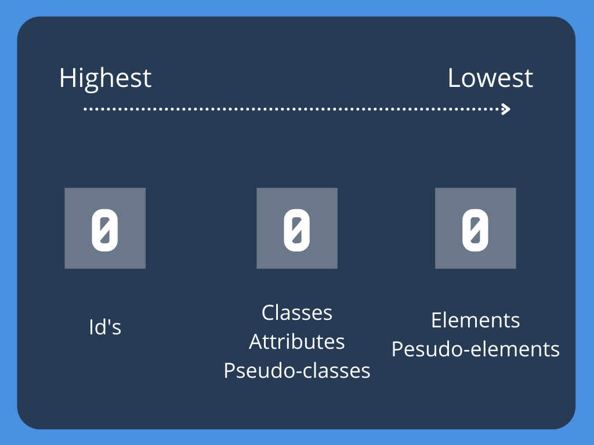

Welcome to
Introduction to CSS
ReDI School Munich - Spring 2021
But first...
Let us recap!
- HTML, tags and elements
- A tad of CSS
- The homework!
What is CSS?
Cascade Style Sheet
What do we use it for?
- We use CSS to style a document and define how it should be visually presented to the user
- Change the color of a text, make something move, push an element to the side and more!
How do we use it?
There are three different ways of including css in our websites...
Inline
Internal
External
Inline CSS
Internal CSS
External CSS
CSS Syntax
I want the main heading to be red and somewhat big...
Selectors
They are the ones that let us find or SELECT the element that we want to style
Basic Selectors
/* I am a pink h1!
*/
#header { /* Only elements with id header */
color: pink;
}
Pseudo-classes Selectors
/* Selects the anchor only when is hovered or focused */
a:hover, a:focus {
color: pink;
}
/* Selects the last p of the parent */
a:last-child {
color: blue;
}
Pseudo-elements Selectors
/* Selects the last p of the parent */
a::before {
color: blue;
content: "Before content"
}
/* Selects the last p of the parent */
a::after {
color: blue;
content: "After content"
}
I am a paragraph!
Combinators
Descendant
Selects all elements that are inside another
/* Selects the last p of the parent */
div p {
color: blue;
}
Paragraph1
Paragraph2
Adjacent Sibling
Selects the second element directly follows the first, and both share the same parent.
/* Selects the last p of the parent */
div + p {
color: blue;
}
Paragraph1
I will be blue
This won't be blue
General Sibling
This means that the second element follows the first (though not necessarily immediately), and both share the same parent.
/* Selects the last p of the parent */
div ~ p {
color: blue;
}
Here is some content.
More content.
And here is a red paragraph!
And here is a another red paragraph!
Children
Selects elements that are direct children to the first element
/* Selects the last p of the parent */
div > p {
color: red;
}
Paragraph1
I will be red
This won't be red
Let's practice!

Specificity
- Is how the browser decides which property values are the MOST important for an element
- If two or more rules are competing the browser needs to select a winner!

Inline ALWAYS wins!
If two rules are the same, the last one wins
div {
color: red;
}
div {
color: blue; /* I WIN! */
}
When they are not exactly the same there is some brain gymnastics involved
How does the browser calculate Specificity?

p {
color: red;
}
div p {
color: blue;
}
Which color am I?
p {
color: red;
}
div p {
color: blue;
}


.text {
color: red;
}
#text {
color: blue;
}
Which color am I?
.text {
color: red;
}
#text {
color: blue;
}
Let's see it in action!

What is the cascade?

There are 4 main levels in the CSS Cascade
- Importance!!
- Origin
- Specificity
- Position
Importance
When is best to process it and manual overrides
- Transitions
- !important (not recommended)
- Animation
- Normal properties
Origin
Where does the rule come from?
- Website (our styles)
- User
- Browser (default)
Specificity
Who won the race?
- Inline
- ID
- Classes, attributes, pseudo-class
- Element, pseudo-element
Position
Where in the code is located?
Last one wins!!
Homework
Part I - Properties
Create a Button that looks like the image
Part II - Selectors
- Make the text with the class special RED
- Set the background of all the spans to PINK and the color BLUE
- Make the last paragraph element have a big font size and ORANGE
- Set the hover and focus states for all the links to have background CYAN
- Make the element with id "continue" to have a big font size
- Make all strong elements inside the list to have color BLUE
- Make the second link element to have background color VIOLET
Questions?